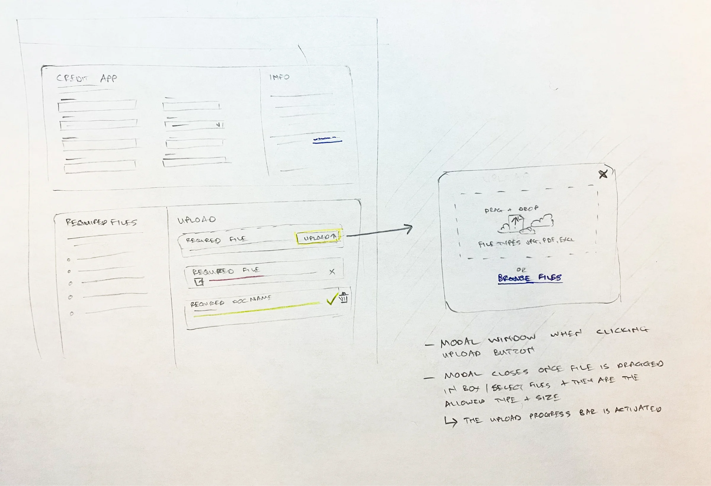
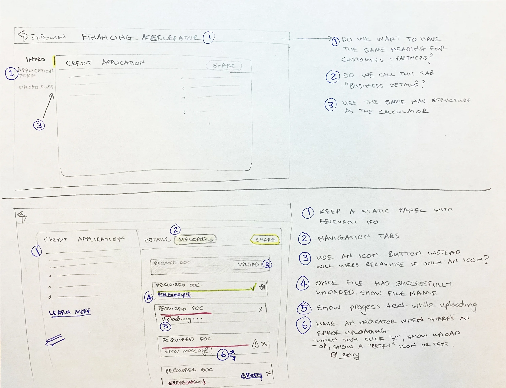

Nobody should stare at a spinner
This is one piece of Arlo, the lender portal I designed at EnPowered. Borrowers had to upload stacks of financial documents, and our AI needed time to read them. A 100-page bank statement doesn't process in a second. I didn't want anyone watching a spinning wheel and wondering if it had worked, or giving up halfway.

The finished design: every file shows its own status, with a count and a time estimate for the batch.
Don't make people tidy their files first
We learned that asking borrowers to rename or sort their files caused drop-off. So the upload area takes whatever they drop in, a whole pile at once. Arlo works out what each file is, renames it and matches it to the right requirement. The borrower's job is to find the documents. Sorting them is ours.

My first pass: a drag-and-drop modal that closes itself once the files are accepted, then a progress bar on each required file.
I sketched every state a file can be in
Before any high-fidelity work, I drew each state on paper: waiting, uploading with progress text, done with the file name showing, and failed with a clear retry. I questioned the small stuff too. One note asks whether people would recognize an icon-only upload button, or if it needed a label.

Numbered notes on paper: show the file name once it's uploaded, show progress text while it's uploading, and flag errors with a retry.
Tell people they can leave
In the final design, each file shows where it's at, from Uploading to Identifying, with a time estimate for the batch. Files Arlo can't read, like a zip, go into their own Unsupported files box instead of failing quietly. And the borrower knows they can move on to the next step while the AI works in the background.

Issues sit at the top with the reason and the fix. Unsupported files get their own box, so nothing disappears.
The result is a to-do list
When processing finishes, problems rise to the top with what to do next: the name on the void check doesn't match the business, or the driver's licence has expired. Everything else drops into Completed. The borrower never has to guess what's left.

With the issues cleared, the screen is a list of what's done, with room for extra documents the lender didn't ask for.
What it did
This flow was part of the wider Arlo change that cut document collection from 2–4 weeks to 1–2 days, with 80% less back-and-forth between lenders and borrowers. I can't separate this piece's share from that total. [ASK RYAN: any number just for the upload flow, like fewer abandoned uploads or fewer re-requested documents?]